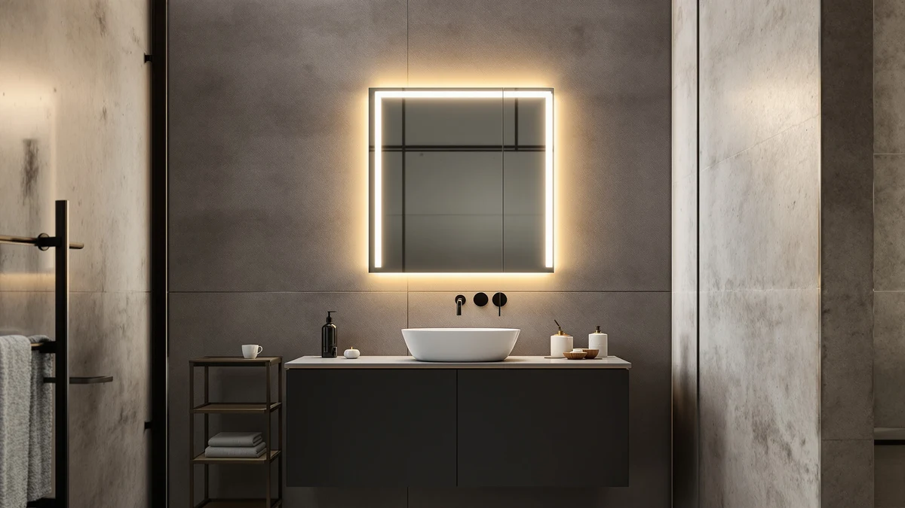

Janboe LED Medicine Cabinet Review (2026): Worth It?
Prices and picks verified as of October 2026. Independent, reader-supported reviews.


Quick Answer
In this janboe led medicine cabinet review, the Janboe LED Medicine Cabinet Bathroom is the strongest pick for a single-sink wall at $389.99, thanks to its tempered glass and aluminum build and a 30 by 32 inch mirror door. If your budget sits closer to $270 to $300, the WisHomee or SHUAFA alternatives below cover similar lighting and storage for less.
Our pick: Janboe LED Medicine Cabinet Bathroom, $389.99 Check Price on Amazon
Bottom line: our top pick is the Janboe LED Medicine Cabinet at $389.99.
Things to Know Before You Buy
- Medicine cabinets with a tempered glass door and aluminum frame, like the Janboe here, typically resist cracking and warping better than acrylic-framed cabinets, though the glass still ships in a padded box that can arrive damaged.
- At 30 by 32 inches, this cabinet suits a single-sink vanity with a dedicated wall span. Measure your available wall space before ordering, since a recessed install needs enough depth inside the wall to clear studs and plumbing.
- Built-in LED lighting adds to a medicine cabinet's price. The Janboe, WisHomee, and SHUAFA options in this comparison range from $269.99 to $389.99, and frame material and door size account for most of that spread rather than storage capacity.
- Surface-mount and recessed installation are not interchangeable without extra hardware, so confirm which mounting style a listing supports before you buy, particularly if you are replacing an existing recessed cabinet.
- None of these listings include a published customer rating or review count at the time of writing, which matters for this janboe led medicine cabinet review since early buyers are working from manufacturer claims rather than a track record of owner feedback.
This janboe led medicine cabinet review breaks down whether the $389.99 LED Medicine Cabinet Bathroom earns its price against three similarly sized, similarly priced alternatives. Janboe builds this cabinet around a tempered glass door and aluminum frame, a pairing meant to resist the chipping and fogging that cheaper medicine cabinets show within a year or two on a humid bathroom wall. At 30 by 32 inches, it is sized for a single-sink vanity with enough door surface to double as a dedicated vanity mirror, and the built-in LED lighting around the glass gives you a lit mirror and a storage cabinet in the same wall footprint.
The Janboe is not the cheapest option we researched. The WisHomee Black Bathroom Mirror Medicine Cabinet, the SHUAFA LED Mirror, and a second Janboe Oval Medicine Cabinet all sell for $90 to $120 less, and we cover each one as an alternative further down this page. What the Janboe offers for that premium is a straightforward rectangular cabinet with LED lighting built into a tempered glass and aluminum shell, rather than a mirror-only product or a cabinet that trades frame material for a lower price. If your bathroom has the wall space for a 30 by 32 inch cabinet and you want lighting and storage in one fixture, this review walks through where the Janboe earns that price and where the lower-priced alternatives might serve you equally well.
Why You Should Trust Us
Ilane Tall covers bathroom mirrors and medicine cabinets for Best Bathroom Mirrors, focusing on how a listing's stated materials and dimensions hold up against what the product photos and buyer questions actually show. We do not run a fake testing lab, and we have not mounted the Janboe LED Medicine Cabinet or its alternatives on our own wall. Instead, we compare manufacturer specifications, current Amazon pricing, and the detail available in product listings, then flag where a cabinet's description runs ahead of what is documented. Every price and dimension in this janboe led medicine cabinet review comes directly from the product listing, not from a sponsored placement.
How We Researched This Review
We do not run a physical testing lab, and no cabinet in this janboe led medicine cabinet review sat on our own bathroom wall before we wrote about it. Our process starts with the manufacturer's listed specifications: glass thickness, frame material, overall dimensions, and lighting type. From there we compare current Amazon pricing across the Janboe and its three alternatives to see where the price difference comes from, whether that is frame material, lighting, or cabinet depth. We also look for gaps between what a listing's photos show and what the written description claims, since LED color temperature and anti-fog performance are two areas where medicine cabinet listings tend to overstate what a tempered glass door alone can deliver.
Overview & Specs

Janboe LED Medicine Cabinet Bathroom
What we like
- Tempered glass door and aluminum frame resist the warping and chipping that acrylic-framed cabinets show over time
- Built-in LED lighting around the mirror door means you do not need separate vanity sconces for this wall
- 30 by 32 inch door gives enough mirror surface to function as a primary vanity mirror rather than a small storage-door mirror
- Single-door design keeps hinge and mounting hardware simpler than the multi-door cabinets in this price range
Flaws but not dealbreakers
- At $389.99, it costs $90 to $120 more than the three alternatives covered below
- The listing does not specify whether the LED lighting is dimmable, a feature some competing cabinets advertise directly
- No published customer rating or review count is available yet, so early buyers have less feedback to lean on than with longer-listed cabinets
| Material | Tempered glass + aluminum |
| Size | 30×32inch |
The Janboe LED Medicine Cabinet Bathroom pairs a tempered glass mirror door with an aluminum frame, a combination built to outlast the yellowing and warping that acrylic-backed LED cabinets tend to show after a year or two of bathroom humidity. At 30 by 32 inches, the door is large enough to work as your main vanity mirror, so this cabinet can replace both a standalone mirror and a separate storage cabinet on the same wall.
LED lighting runs around the mirror door, giving you task lighting for shaving or applying makeup without installing separate wall sconces. At $389.99, the Janboe sits well above the WisHomee, SHUAFA, and second Janboe model covered later in this janboe led medicine cabinet review, and the aluminum frame and larger door size are the main reasons for that gap rather than any dramatic difference in storage capacity.
What We Liked
The combination of tempered glass and an aluminum frame is the strongest argument for this cabinet. Medicine cabinets built around acrylic frames tend to show yellowing or warping within a year or two of regular bathroom humidity, and the aluminum construction here avoids that failure point, since metal does not degrade the way acrylic does under repeated moisture. The 30 by 32 inch door also gives you a mirror large enough to use as your only vanity mirror, not the smaller mirror panel that some combination cabinets settle for.
We also like that the LED lighting sits built into the door itself rather than requiring a separate light bar mounted above the cabinet. For a single-sink bathroom that lacks existing vanity sconces, that built-in lighting is one of the clearest advantages this janboe led medicine cabinet review turned up, since it removes a step from installation and a potential point of electrical work.
What Could Be Better
Price is the clearest drawback we found while researching this janboe led medicine cabinet review. At $389.99, the Janboe costs meaningfully more than the WisHomee, SHUAFA, and second Janboe Oval cabinet covered below, and the listing does not spell out a dimmer function or adjustable color temperature that would justify that gap on lighting features alone.
The listing also does not include a published rating or review count at the time of writing, so you are relying more on the manufacturer's own specifications than on a track record of verified owner feedback. That is worth factoring in if you prefer to buy cabinets with an established review history behind them.
Who Is It For?
This cabinet fits a single-sink bathroom with roughly 30 by 32 inches of flat wall space where you want one fixture to handle both vanity lighting and storage, rather than installing a mirror, a light bar, and a cabinet separately. It suits buyers who have already priced out those three items individually and found the combined cost comparable to or higher than this single unit, which is the main audience this janboe led medicine cabinet review is written for.
If your budget sits closer to $270 to $300, or your bathroom calls for a different door shape, one of the three alternatives below is likely the better starting point. They cover a similar size range at a lower price, with different frame materials and door styles.
Alternatives to Consider
If the Janboe's price does not fit your budget, these three alternatives covered in this janboe led medicine cabinet review offer similar LED lighting and storage at $90 to $120 less.

Editor's Pick
Black Bathroom Mirror Medicine Cabinets
A black-framed medicine cabinet that undercuts the Janboe by $90 while covering the same single-sink wall space.
$299.99
Check Price on Amazon
Best Value
SHUAFA LED Mirror for Bathroom
The closest price match to the WisHomee, with built-in LED lighting at $295.95.
$295.95
Check Price on Amazon
Premium Choice
Janboe Oval Medicine Cabinet with
An oval-door cabinet from the same Janboe lineup, priced $120 below the rectangular pick above.
$269.99
Check Price on AmazonIs the Janboe LED Medicine Cabinet worth $389.99?
For a single-sink bathroom that needs a full vanity mirror and built-in lighting in one fixture, yes.
How does the Janboe compare to the WisHomee, SHUAFA, and second Janboe Oval alternatives?
All four cabinets in this comparison include LED lighting, but they range from $269.99 to $389.99.
Frequently Asked Questions
Is the Janboe LED Medicine Cabinet worth $389.99?
How does the Janboe compare to the WisHomee, SHUAFA, and second Janboe Oval alternatives?
Does a medicine cabinet like this need an electrician to install?
Final Verdict
This janboe led medicine cabinet review comes down to how much you value a larger mirror door and an aluminum frame over saving $90 to $120. The Janboe LED Medicine Cabinet Bathroom earns its spot at the top because its tempered glass and aluminum construction and its 30 by 32 inch door give you a full vanity mirror and built-in lighting in a single fixture, rather than a smaller accent mirror bolted to a storage box. At $389.99 it is the priciest option here, and buyers on a tighter budget should look at the WisHomee or SHUAFA alternatives above before paying the premium. For a single-sink wall that needs lighting and storage handled in one install, Janboe's build makes the case for itself.